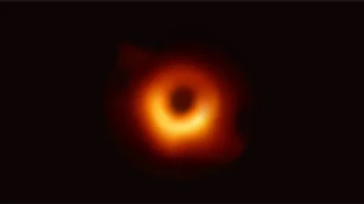

Buracos negros
"Um buraco negro é uma região do espaço com um campo gravitacional tão intenso que nem mesmo a luz consegue escapar de dentro dele. A intensa gravidade comprime a matéria até que não haja mais espaço entre os átomos. Corpos celestes dessa natureza podem surgir em decorrência da morte de estrelas supermassivas."
Curiosidade:
"Os buracos negros não “sugam” tudo que está a sua volta, no entanto, o seu campo gravitacional pode prender estrelas e planetas longínquos em órbitas espirais. Para que algo seja de fato “sugado” para o interior de um buraco negro, sem qualquer chance de fuga, é necessário que se estabeleça uma distância mínima ao seu centro, chamada de horizonte de eventos. A essa distância, a velocidade de escape, ou seja, a mínima velocidade para se escapar de um buraco negro, é maior que a própria velocidade da luz."
Veja abaixo como é o som de um buraco negro segunda a Nasa: